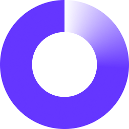

Professional experience
Bloomberg L.P.
New York, NY
Software Engineer (full time)
August 2023 - Present
President
May 2022 - May 2023
Bloomberg L.P.
New York, NY
Software Engineering Intern
May 2022 - July 2022

OATS Technology Inc.
Elmsford, NY
Software Engineer
Nov 2021 - Dec 2021
Amazon
Seattle, WA
Software Development Engineering Intern
May 2021 - July 2021
Zazraak
Bratislava, Slovakia
Development Intern
Jul 2020 - Mar 2021
Undergraduate Researcher
Oct 2019 - May 2020